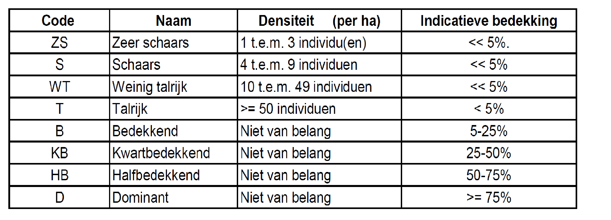

Veldprotocol Kwaliteitsmeetnet Natura 2000 habitats partim heidehabitats
psammofiele heide (2310), buntgrasvegetaties (2330_bu), droge heide (4030), natte heide (4010)
Oosterlynck, Patrik
 0000-0002-5712-0770
0000-0002-5712-0770
2023-11-28
Metadata
| reviewers | documentbeheerder | protocolcode | versienummer | taal | projectnaam |
|---|---|---|---|---|---|
| Hans Van Calster, Toon Westra, Leen Govaere | Patrik Oosterlynck | spp-001-nl | 2023.08 | nl | mhq |
Controleer deze tabel om te zien of een meer recente versie beschikbaar is.
1 Wijzigingen t.o.v. vorige versies
1.1 2023.08
- Eerste versie
2 Afhankelijkheden
| Protocolcode | Versienummer | params | Opgenomen als subprotocol |
|---|---|---|---|
| sfp-401-nl | 2023.03 | NA | FALSE |
| sfp-001-nl | 2023.01 | NA | FALSE |
3 Onderwerp
3.1 Definities en afkortingen
- habitattype 2310: psammofiele heide op landduinen
- habitattype 2330: open graslanden op landduinen
- habitattype 4010: vochtige en natte heide
- habitattype 4030: droge heide
- habitattype 7150: snavelbiesvegetaties
- habitattype 5130: jeneverbesstruweel
- habitattype 7110: actief hoogveen
- habitatsubtype 7140_oli: overgangsvenen
- habitatsubtype 2330_bu: buntgrasvegetatie op landduinen
- habitatsubtype 2330_dw: dwerghavergetaties
- SVI: staat van instandhouding
- LSVI: lokale staat van instandhouding
- SBZ: speciale beschermingszone
- RTK GNSS: Real Time Kinematic Global Navigation Satellite System waarbij cm of decimeter nauwkeurige positiebepaling mogelijk is. Een alternatief is werken met een Fieldmap installatie.
- Fieldmap: geïntegreerde tool die is ontworpen voor veldgegevensverzameling en ondermeer gebruikt wordt bij de Vlaamse Bosinventaris. De positiebepaling gebeurt hier d.m.v. lasermetingen
3.2 Doelstelling en toepassingsgebied
3.2.1 Doelstelling
Dit protocol beschrijft de werkwijze die dient gevolgd te worden voor de gegevensinzameling ten behoeve van de 6-jaarlijkse rapportage aan de EU omtrent de staat van instandhouding (SVI) van de heidehabitattypes 2310 (psammofiele heide), 2330 (open graslanden op landduinen), 4010 (natte heide) en 4030 (droge heide). Voor deze vegetatietypes dienen in Vlaanderen een 1000-tal random geselecteerde meetpunten opgemeten te worden en dit per meetpunt op twee verschillende schaalniveaus: - een vierkante vegetatieplot van 3 op 3 meter waar een vegetatie-opname wordt uitgevoerd; - een cirkelvormige plot met diameter 18m waar een aantal bijkomende indicatoren dienen ingeschat te worden. De meetpunten worden eens om de 6 jaar opgemeten. De ingezamelde gegevens laten toe om een uitspraak te doen over het aandeel habitat dat zich in een gunstige/ongunstige toestand bevindt en de trend daarvan. Voor meer info omtrent de werkwijze van deze bepaling verwijzen we naar Paelinckx et al. (2019).
3.2.2 Toepassingsgebied
Dit veldprotocol is specifiek van toepassing bij de gegevensinzameling in het monitoringsmeetnet kwaliteit van een aantal specifieke Natura2000 heidehabitats, namelijk 4030, 2310, 2330 en 4010. Andere heidegebonden habitattypes zoals het jeneverbesstruweel (5130) en actief hoogveen (7110) zijn dermate zeldzaam dat ze niet via een steekproef opgevolgd worden. Snavelbiesvegetaties (7150) komen voor op dynamische locaties in het heidelandschap zoals plagplekken en venoevers en vereisen eveneens een aangepaste methode. Overgangsveen (7140_oli) betreft veelal een vorm van venige heide maar dient volgens het protocol van moerassen- en venengroep (link nog in te voegen) opgemeten te worden. Wel is het relevant om de verschillende heidevegetatietypes te kunnen onderscheiden van de hier beoogde doelvegetaties omdat ze ermee in overgang of mozaïek kunnen voorkomen. Hiervoor kan dient men gebruik maken van de karteersleutel voor heides (De Saeger et al., 2016).
3.2.3 Vegetatiekundige beschrijving van de relevante heidetypes
Landduinen en hun begeleidende vegetatietypes komen voor op profielloze, niet-gepodzoliseerde zandbodems. Dit zijn in geologische termen jonge bodems die door zandverstuiving ontstaan zijn, soms bovenop oudere bodems, waar wel een profielontwikkeling heeft plaatsgevonden (podzols). Op het terrein kan je dus naast de bodemkaart met behulp van een grondboor vaststellen of er profielontwikkeling is in het bovenste deel (minimaal enkele tientallen cm). Een landduinlandschap heeft vaak nog een duinstructuur, waarbinnen grotere en/of kleinere zandverstuivingen herkenbaar zijn (zie Figuur 3.1). Dit duidt er dan in meer vastgelegde situaties op dat men zich in een voormalig stuifzandgebied bevindt. Vegetaties met dwergstruiken op landduinbodem classificeren als 2310 psammofiele heide (psammos= zand in het Grieks) en pioniersvegetaties (Buntgras, Zandstruisgras, mossen en korstmossen) als 2330. Daarbinnen onderscheiden we twee subtypes, namelijk het buntgrasverbond (2330_bu) en het dwerghaververbond (2330_dw).
Figuur 3.1: Voorbeeld van een psammofiele buntgrasvegetatie (2330_bu) op stuifzandbodem, met een typisch duinreliëf, doch in een gefixeerd stadium met weinig open zand
Buntgrasvegetatie op landduinen (2330_bu) komen voor op landduinen waar de bodem door de hoge dynamiek nog geen profielontwikkeling heeft doorgemaakt (jonge bodems). Hoogstens is er een dunne humuslaag aanwezig. In goed ontwikkelde vormen zijn er aanzienlijke delen open zand, maar veel landduinen in Vlaanderen zijn in min of meerdere mate gefixeerd. De vegetatie wordt gekenmerkt door een hoog aandeel mossen en korstmossen die de bodem in een eerste fase fixeren, in combinatie met een aantal typische zandbindende vaatplanten.
Typische soorten: Buntgras (Corynephorus canescens), Heidespurrie (Spergula morisonii), Zandzegge (Carex arenaria), Zandstruisgras (Agrostis vinealis), Zilverhaver (Aira caryophyllea), Vroege haver (Aira praecox), Dwergviltkruid (Filago minima), Ruig haarmos (Polytrichum piliferum), Rendiermossen (Cladina spp.), Heidestaartjes en Bekermossen (Cladonia spp.) en Cetraria spp.(IJslands mos en Kraakloof)
Op meer gefixeerde, schrale pioniersituaties in heidegebieden kan je ook dwerghavervegetaties (2330_dw) aantreffen. Het onderscheid tussen beide subtypes is zelden heel scherp maar doorgaans zijn de dwerghavervegetaties wat minder rijk aan mossen en korstmossen, en wordt Buntgras vervangen door Vroege en/of Zilverhaver. Het dwerghaververbond komt ook buiten het strikte heidelandschap op zandgronden voor op gepodzoliseerde bodems.
Droge heide op landduinen (2310) komt eveneens voor op niet-gepodzoliseerde zandbodems maar vertegenwoordigen een later stadium in de successiereeks, waarbij de landduin verder gefixeerd is geraakt met ondermeer dwergstruiken. Kensoort is Struikheide aangevuld met andere klassieke soorten van droge heide. Vaak zullen 2330 en 2310 in mozaÏek met elkaar voorkomen. Qua vegetatiesamenstelling van de hogere planten is er geen duidelijk onderscheid met droge heide (4030), wel is er meestal een andere mos- en korstmoslaag aanwezig en dient in de eerste plaats naar het bodemprofiel en de landschappelijke microtopografie gekeken te worden om het onderscheid te maken.
Typische soorten: Struikhei (Calluna vulgaris), Klein warkruid (Cuscuta epithymum), Stekelbrem (Genista anglica), Kruipbrem (Genista pilosa), aangevuld met de typische soorten van 2330_bu
Noord-Atlantische vochtige heide (4010) omvat een reeks uiteenlopende (dwergstruik)vegetaties die voorkomen op locaties waar de grondwatertafel jaarrond vrij dicht onder het maaiveld blijft (tot maximaal -1 m TAW) en in goed ontwikkelde situaties vaak met een abundant aspect van Gewone dopheide en veenmossen. Ook door pijpenstrootje gedomineerde situaties op natte bodems kwalificeren als 4010. Op de natste plekken spreken we van venige heide waar dopheide wat minder abundant is en het vooral helofyten en veenmossen zijn die aspectbepalend worden. Wanneer hoogveensoorten frequent gaan voorkomen en er veenopbouw plaatsvindt spreken we over overgangsveen (7140_oli) (zie verder).
Typische soorten: Gewone dophei (Erica tetralix), Kleine zonnedauw (Drosera intermedia), Ronde zonnedauw (Drosera rotundifolia), Veenpluis (Eriophorum polystachion), Klokjesgentiaan (Gentiana pneumonanthe), Trekrus (Juncus squarrosus), Beenbreek (Narthecium ossifragum), Witte snavelbies (Rhynchospora alba), Veenbies (Scirpus cespitosus), Tweenervige zegge (Carex binervis), Bruine snavelbies (Rhynchospora fusca), Wilde gagel (Myrica gale), Kussentjesveenmos (Sphagnum compactum), Wrattig veenmos (Sphagnum papillosum), Zacht veenmos (Sphagnum tenellum), Gewoon veenmos (Sphagnum palustre) en Geoord veenmos (Sphagnum auriculatum)
Droge Europese heide (4030) zijn groenblijvende formaties van dwergstruiken, en dan voornamelijk struikhei. Ook gedegradeerde (vergrast met pijpestrootje of bochtige smele en/of deels verboste) heideterreinen vallen hieronder.
Typische soorten: Struikhei (Calluna vulgaris), Klein warkruid (Cuscuta epithymum), Kleine wolfsklauw (Diphasiastrum tristachyum), Rode dophei (Erica cinerea), Stekelbrem (Genista anglica), Kruipbrem (Genista pilosa), Grote wolfsklauw (Lycopodium clavatum), Rode bosbes (Vaccinium vitis-idaea), Blauwe bosbes (Vaccinium myrtillus)
Open vegetatietypes gebonden aan het heidelandschap die in een ander stratum van het meetnet en volgens een ander protocol worden opgevolgd maar dus mogelijk wel in complex met deze meetpunten voorkomen:
Overgangsvenen (7140_oli) zijn venige heides of verlandende vennen waar de veenvorming dermate doorgezet is dat er hoogveensoorten beginnen te groeien. Ze luiden een relatief lange overgangsfase in naar actief hoogveen (7110), dat in Vlaanderen enkel nog aan het Ven onder de Berg voorkomt, maar een zeer gelijkaardig pallet aan typische soorten vertoont. Specifieke veenmossoorten, vaak typisch met wijnrode tinten, zijn indicatief voor overgansgvenen naast hoogveensoorten als Lavendelheide, Eénarig wollegras en Kleine veenbes. Er is een afwisseling van veenmosbulten met waterhoudende slenken met meer venachtige begroeiingen.
Typische soorten: Lavendelhei (Andromeda polifolia), Eénarig wollegras (Eriophorum vaginatum), Kleine veenbes (Vaccinium oxycoccos), Ronde zonnedauw (Drosera rotundifolia), Witte snavelbies (Rhynchospora alba), Slijkzegge (Carex limosa), Veenbloembies (Scheuchzeria palustris), Veenmosorchis (Hammarbya paludosa), Hoogveenveenmos (Sphagnum magellanicum), Wrattig veenmos (Sphagnum papillosum), Rood veenmos (Sphagnum rubellum), aangevuld met alle typische soorten van 4010.
Snavelbiesvegetaties (7150) zijn pioniersgemeenschappen met snavelbies op plagplekken of ven(oever)situaties met schommelende waterstanden. Meestal neemt dit type bij ons slechts beperkte oppervlaktes in en evolueert het op plagplekken na een aantal jaar naar natte heide waarmee het doorgaans in complex voorkomt. Door betreding en specifiek heidebeheer kunnen deze situaties ook in stand gehouden worden. De kruidlaag is ijl met een aanzienlijk aandeel open bodem maar kan in latere stadia hoge bedekkingen aan natte heidesoorten vertonen.
Typische soorten: Kleine zonnedauw (Drosera intermedia), Ronde zonnedauw (Drosera rotundifolia), Moeraswolfsklauw (Lycopodiella inundata), Witte snavelbies (Rhynchospora alba), Bruine snavelbies (Rhynchospora fusca)
Meer info: -Systematiek van natuurtypen voor de biotopen heide,moeras, duin en slik en schor: Deel 2 Heiden (Vandenbussche et al., 2002) - Europees beschermde natuur in Vlaanderen (Decleer, 2007).
4 Extra benodigdheden t.o.v. de subprotocols
- rolmeter of touw van 18m, ultrasone afstandmeter (zie Figuur 4.1)
- Kompas, kan eventueel ook via een app op een smartphone
- RTK-GNSS of Fieldmap installatie voor navigatie en data-opslag (zie Figuur 4.2)
- Fototoestel, kan eventueel ook met een smartphone
Figuur 4.1: Voorbeeld van een ultrasone afstandsmeter voor het afbakenen van de 18meter plot
Figuur 4.2: Voorbeeld van een RTK-GPS waarvan het signaal op een smartphone kan binnengehaald worden
5 Overkoepelende werkwijze met verwijzing naar subprotocols
Overzicht van de verschillende stappen
Volg volgende stappen in chronologische volgorde:
navigatie naar meetpunt
Vegetatieplot installeren
fototografisch documenteren van het meetpunt
bepalen of een meetpunt tot de doelpopulatie behoort of niet
eventueel vervangen van de meetlocatie in het geval het originele meetpunt niet tot de doelpopulatie behoort volgens sub-protocol meetpunten vervangen (protocol sfp-001-nl versie 2023.01).
vegetatie-opname uitvoeren volgens subprotocol vegetatie-opname met Londo-schaal (protocol sfp-401-nl versie 2023.03).
meten van de variabelen in de 18 meter structuurplot
5.2 STAP 2: Installeren van het vegetatieproefvlak (3 m x 3 m)
Het vegetatieproefvlak wordt geïnstalleerd volgens de werkwijze in protocol sfp-401-nl versie 2023.03.
De oriëntatie van het proefvlak is als volgt:
- het punt waar naartoe genavigeerd werd is de zuidoostelijke hoek van de vegetatieplot. Hier wordt er een eerst hoekpaaltje geplaatst en van daaruit wordt met behulp van een (digitaal) kompas 3 meter naar het noorden afgemeten en een tweede paaltje geplaatst. Dit wordt herhaald vanaf het tweede hoekpunt naar het westen en tenslotte vanuit het derde hoekpunt naar het zuiden, zodat een vierkant met oppervlakte 9 m² bekomen wordt (zie Figuur 5.1)
Figuur 5.1: Oriëntatie van de vegetatie- en structuurplot
5.3 STAP 3: Fotografisch documenteren
Neem de foto’s vooraleer je de vegetatie-opname maakt. Foto’s worden altijd gemaakt, ook wanneer er geen opname uitgevoerd wordt (zie 5.1.5). Indien je werkt met een externe camera codeer het beeld dan duidelijk in de daartoe voorziene velden in de veldcomputer of het vrije veld ‘opmerkingen’ van de papieren formulieren. Je kan ook eerste een foto maken van het unieke ID nummer van de plot en daarna de foto’s van de vegetatie-opname maken. De foto’s worden genomen vanuit het zuiden kijkend naar het noorden. De camera tilten in portrait oriëntatie waardoor de vegetatie maximaal in het fotokader valt. Neem 2 foto’s per meetpunt: één overzichtsfoto waarbij je de plot landschappelijk kadert, en een tweede waarbij je enkel de vegetatie in de plot fotografeert (zie Figuur 5.2).
Figuur 5.2: Voorbeeld van een foto van het proefvlak in het landschap (links) en ingezoomd op het proefvlak zelf (rechts)
5.4 STAP 4: Bepalen of een meetpunt tot de doelpopulatie behoort of niet
Vooraleer we een meting uitvoeren, moeten we eerst controleren of de vegetatie in het proefvlak effectief classificeert als het beoogde doelvegetatietype. De habitatkaart is gebruikt als steekproefkader om de meetpunten te selecteren, maar omwille van verschillende redenen (voorkomen van complexen in de kartering, polygoongrenzen die niet exact overeenkomen met de terreinsituatie, verouderde kaartgegevens,… ) kan een geselecteerde plot buiten de doelvegetatie vallen. Daarom dienen we steeds te bepalen met welk vegetatietype we te maken hebben. Daarvoor gebruiken we de karteersleutels, in dit geval de heidesleutel (https://www.vlaanderen.be/inbo/de-biologische-waarderingskaart/bwk-handleiding-veldsleutels/). Hierin zijn ook de relevante contact- en rompgemeenschappen opgenomen. Het schaalniveau waarop de sleutel dient toegepast te worden is niet dat van een vegetatieplot maar deze van de min of meer homogene vegetatievlek waarin het proefvlak zich bevindt.
Onderstaande beslisregels worden gehanteerd voor het al dan niet opmeten van een proefvlak
- de vegetatieplot maakt deel uit van een homogene, grotere vlek doelvegetatie –> opname doen
- de vegetatieplot maakt geen deel uit van een doelvegetatievlek –> opname niet doen voor dit doeltype, ga naar stap 5 om te bepalen hoe je eventueel het meetpunt kan vervangen door een andere meetlocatie in de nabijheid
- de vegetatieplot bevat naast doelvegetatie ook (een) andere vegetatietype(s) die ruimtelijk duidelijk van elkaar gescheiden zijn (bv. bos naast een heideterrein, weg/akker naast een heide)
- –> opname niet doen wanneer aandeel doelvegetatie in de vegetatieplot kleiner is dan 50%,
- –> opname doen wanneer doelvegetatie in de vegetatieplot gelijk of groter is dan 50%
zie ook Figuur 5.3
Figuur 5.3: Samenvatting beslisregels: steekproefpunt opmeten of niet?
Indien het eerder een geleidelijke overgang betreft naar een verwant vegetatietype dan wordt dit beschouwd als een onderdeel van de doelvegetatie en wordt de opname gemaakt inclusief de overgang. Noteer steeds op welk aandeel (in %) van de plot je data betrekking heeft. Doe dit zowel voor de vegetatieplot als de cirkelvormige structuurplot. Bij het schatten van de bedekkingen van de aanwezige soorten blijf je dit doen ten opzichte van de volledige plot. Je gaat de bedekkingen dus niet herrekenen voor het aandeel dat effectief doelvegetatie bevat. Bv. in een 3 m x 3 m plot blijft 30 cm x 30 cm dus 1%, ook wanneer 1/4 van de volledige plot niet tot de doelvegetatie behoort.
Voor de structuurplot (zie stap 7) wordt gelijkaardig gewerkt en dient ook het aandeel doelvegetatie waarop de inschatting betrekking heeft vermeld te worden. De inschatting van de bedekking van de structuurvariabelen gebeurt eveneens alsof het een volledige cirkelplot betreft, m.a.w. 10 m² is 1%. In geval van twijfel voeren we de opname uit en documenteren we de problemen in het opmerkingenveld.
5.5 STAP 5: Vervangpunten selecteren in het geval het originele meetpunt niet tot de doelpopulatie behoort
5.7 STAP 7: Meten van de variabelen in de 18 meter-structuurplot
Aandeel doelvegetatie in de 18 meter-plot opgeven!
Alle criteria dienen voor elk habitattype gescoord te worden. Indien afwezig scoor je met de waarde 0. Voor een aantal van deze criteria dient het protocol van de beheermonitoring gevolgd te worden (nog te ontwikkelen) en de schattingen te doen a.d.h.v. de onderstaande beheermonitoringsschaal.

Verbossing
Om de verbossing te bepalen, schatten we de bedekking (%) van de totale kroonprojectie van alle houtige gewassen met hoogte van minstens 80 cm. Bomen en struiken die vanuit een naastgelegen bos of houtkant overhangen worden niet meegerekend voor deze indicator. Eventuele overlap tussen boom- en struiklaag wordt niet dubbel geteld. Het gaat m.a.w. over het aandeel doelvegetatie in de structuurplot die overdekt wordt door bomen of struiken. Hou voor de schatting van de bedekking in het achterhoofd dat 10 m² ongeveer 1% is van de 18 meter-cirkelplot (~1017 m²). Schattingen tot op 1% nauwkeurig zijn redelijk haalbaar bij lage bedekkingen, maar worden lastiger naarmate de verbossingsgraad toeneemt. Bij hogere verbossingsgraad is een schatting tot op 5% voldoende nauwkeurig. Interpretatie via luchtfoto of een schets zijn hierbij een hulpmiddel. Indien een gedeelte van de plot geen doelvegetatie bevat, wordt dit deel niet in beschouwing genomen voor de verbossing. Maar de inschatting gebeurt wel volgens dezelfde verdeling, m.a.w. 10 m² blijft 1% ook al bevindt zich maar in de helft van de vegetatieplot effectief doelvegetatie.
Successiestadia van buntgrasvegetaties
Vooral bij de landduinen (2330 en 2310) is de aanwezigheid van de verschillende ontwikkelingsstadia een belangrijke structuurparameter: open zand, buntgrasvegetatie, mostapijtjes, korstmosvegetatie. Scoor de aanwezigheid van elk van deze fases door middel van een code uit de beheermonitoringsschaal (zie hoger) op het niveau van de structuurplot. Afwezigheid ook aangeven d.m.v. score 0!
Ouderdomsstructuur Struikhei
De levenscyclus van Struikhei kent 4 fasen. Elke fase verschilt qua bedekking, productie en bloei van Struikhei, maar ook qua microklimaat en soortensamenstelling. Hoe meer fasen in een heide aanwezig zijn, hoe structuurrijker, hoe soortenrijker en hoe robuuster de heidehabitat is. Eenvormige ouderdomsstructuur hangt meestal samen met een onaangepast beheer. Er worden vier leeftijdscategorieën onderscheiden, namelijk, pioniersstadium, ontwikkelingsstadium, climaxstadium en degeneratiestadium (zie Figuur 5.4). Scoor de aanwezigheid van elk stadium m.b.v. codes uit de beheermonitoringsschaal (zie hoger). Afwezigheid ook aangeven d.m.v. score 0!
Figuur 5.4: Cyclische successiestadia in 4 fasen bij Calluna vulgaris (uit Burrows, 1990)
Aanwezigheid veenmoslaag
Schat d.m.v. een code van de beheermonitoringsschaal (zie hoger) de bedekking van alle veenmossoorten samen op het niveau van de structuurplot. Afwezigheid ook noteren!
Aanwezigheid dwergstruiken
Schat d.m.v. een code van de beheermonitoringsschaal (zie hoger) de bedekking van alle dwergstruiken (Gewone Dophei, Struikhei, Blauwe bosbes, Stekelbrem, Kruipbrem, Rode Dophei, Lavendelhei, Rode bosbes,…) op het niveau van de structuurplot. Afwezigheid ook aangegeven!
Vergrassing
Schat d.m.v. een code van de beheermonitoringsschaal (zie hoger) de gezamelijke bedekking van Bochtige smele, Pijpenstrootje, zwenkgrassen, Duinriet en Struisgrassen. Afwezigheid ook aangeven!
Verruiging
Schat d.m.v. een code van de beheermonitoringsschaal (zie hoger) de gezamelijke bedekking van Adelaarsvaren en Braam. Afwezigheid ook aangeven!
Aanwezigheid grijs kronkelsteeltje
Schat d.m.v. een code van de beheermonitoringsschaal (zie hoger) de bedekking van het mos Grijs kronkelsteeltje (zie Figuur 5.5). Afwezigheid ook aangeven!
Figuur 5.5: Enkele typische verschijningsvormen van het mos Grijs kronkelsteeltje. De glasharen in combinatie met de bladvorm zijn een duidelijk veldkenmerk.
6 Extra aspecten van kwaliteitszorg t.o.v. de subprotocols
Enkele tips bij het maken van een vegetatie-opname:
- Vertrappel de vegetatie in de plot zo min mogelijk vooraleer je een vrij volledige soortenlijst hebt en de bedekkingen hebt ingeschat. Doe hierna nog een check op soorten die je eventueel miste meer centraal in de plot of vanop de knieën.
- Maak eerst een lijst van de aanwezige soorten, schat pas bedekkingen als je lijst min of meer volledig is.
- Als je na 5 minuten geen nieuwe soort meer vindt, dan wordt de opname stopgezet.
- Tracht de meest bedekkende soorten bovenaan te groeperen in je lijst.
- In een 3 m x 3 m plot is een 30 cm x 30 cm vlakje daarbinnen gelijk aan 1%. Een band van 30 cm op een 3 m is dan gelijk aan 10%.
- De totale som van alle bedekkingen in éénzelfde vegetatielaag kan meer dan 100% zijn door overlap, maar kan ook erg laag zijn, bijvoorbeeld 10% in buntgrasvegetatie op stuifduin.
- De totale som van kruidlaag, open bodem, strooisellaag en (korst)moslaag is minimaal 100%.
- Kiemplanten van bomen en struiken duid je aan met een “(k)” na de soortnaam.
- Soorten net buiten opnamevlak kunnen vermeld worden, maar dit moet je duidelijk weergeven door de naam te laten volgen door “(R)”.
Referenties